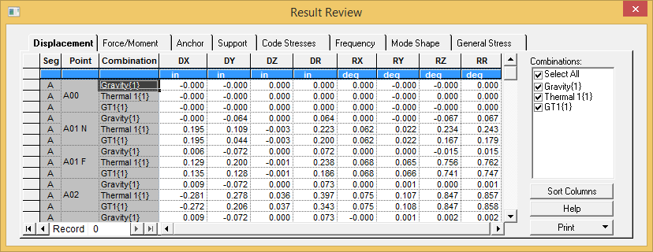
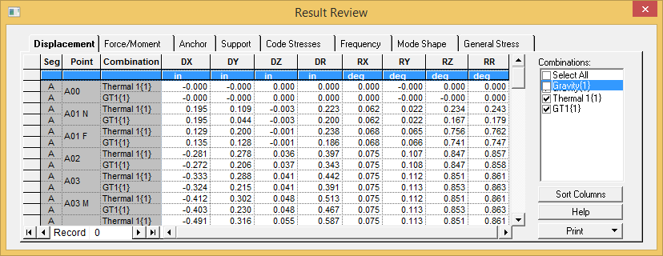
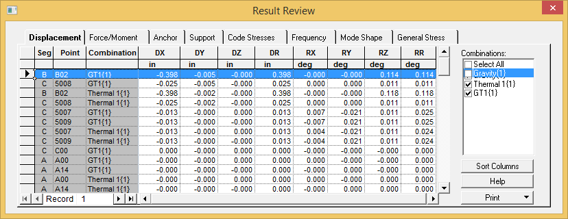

Reviewing Displacement Results (Result Grid)
We will now review displacements in the Results grid.
.png) 1. Select Result >
Interactive > Result Grid. The Displacement
tab is displayed as shown below.
1. Select Result >
Interactive > Result Grid. The Displacement
tab is displayed as shown below.
| Note: | The Displacement tab is shown by default thereafter whichever grid tab was last viewed. |

- Disable the checkbox next to the Gravity load case in the right window pane and the displacements in the grid are only shown for T1 and GT1 case as shown below.

- Double click on the DY column to sort from maximum to minimum displacement in the Y direction as show below.
| Note: |
This provides a quick easy method to establish the maximum and minimum displacements in the complete model (+ve and –ve values). |

- Select the Print button and then Print Grid to send the current grid to the printer.
| Note: |
The Header and Footer can be customized to the company’s standard document format which is saved to the binary file Result.gps for future use. |
- Close the Result Review dialog.